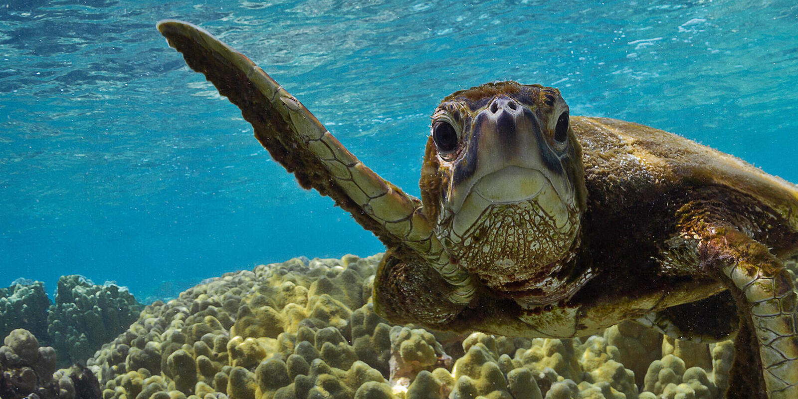

Conversation effort
Once at the hatchery, the eggs are kept safely buried in sand until they emerge from their shells, when they are moved and placed into tanks for the first few days of their lives.
This gives them to opportunity to grow stronger before they are released back to the dangers of the sea, increasing their odds of survival. Several species of turtles are saved in this way.
Experience
At sunset, you can witness the baby turtles being set free on the beach and watch them make their way back to the ocean. Visitors are asked to be mindful of the process of returning baby turtles to the sea.
Loud noises are not allowed, nor are bright lights and flash photography; the baby turtles can confuse the lights for the moon over the ocean, which hinders them from being able to return home.